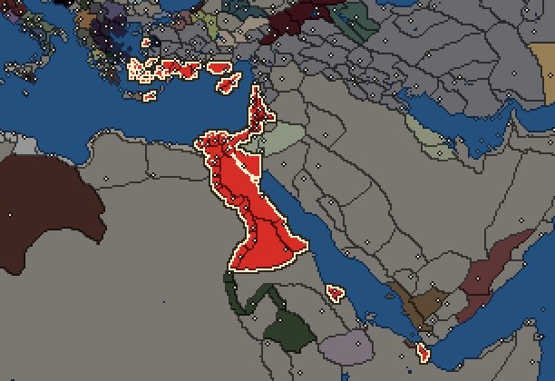

RTR: Imperium Surrectum
RTR: Imperium SurrectumPtolemaic Empire


- difficulty Easy
- Eastern Hellenistic culture
- believes
 Macedonian
Macedonian - 40 settlements
- capital Alexandria
- 201,770 manpower
- 47 characters
- 28 faction units
- 438 regional units
The campaign brief
"The past is certain, the future obscure." – Thales of Miletos
In the beginning Ra wept, and from the tears he wept, came man. Ra created Egypt, and when he travelled sky on Mandjet, the Eye of Ra spent warmth and light on Egypt. Every day, Apophis the serpent tried to stop Ra when he was on the Mesektet, but Ra would always return with the help of Osiris. Now the foreigners who call themselves Greeks tell us to believe in their gods, but we can see that the god they call Dionysos is actually our ancient deity Osiris. But long before the Greeks were graced by the light of the Eye, Egypt had already become a majestic kingdom, led by the sublime pharaoh. Dozens and hundreds of dynasties led Egypt through a long history of brilliance and glory. Which mortal has not heard of the victory of Ramses the Great, son of Sethos, over the Barbarians at the battle of Quadesh (1274 BC)?
However, with splendid power and unimaginable wealth came Hybris, as our Greek friends would say. The court of the pharaoh started to degenerate and from infinite might Egypt fell into ignominy and lost its independence to the Persians. The rule of the Achaemenids was harsh and unpopular, but our people had fallen far, and our attempts to free ourselves of them and expel the foreigners from our godly country failed. But after years of torture Ra smiled on Egypt again and sent Alexander, whom the Greeks call ''the Great'', to liberate the country of the Nile from the Persian Barbarians. Alexander, the son of Amun, destroyed the supremacy of the Persians over the people of the East. When Amun-Re decided to take his son back to the Great Pesedjet of Heliopolis, his generals were deceived by Apophis and Alexander's empire broke apart.
One of these generals was Ptolemaios, who enjoyed the protection of Horus the falcon. He had been among the troops who accompanied the brave hero into Asia and was promoted to be the king's edeatros (taster) and later to a position among the somatophylakes (bodyguards). Ptolemaios continued to impress and rose to the office of general when Alexander was campaigning in Sogdia and Bactria. He excelled in India, and at the time of the demigod's death, Ptolemaios was among the most important of Alexander's generals. Seeing the splendour of Egypt, Ptolemaios chose the country of Amun-Re as his new residence. When the regent Perdikkas ordered the corps of the demigod to be brought to Aigai in Macedon from Babylon in the East, Ptolemaios insidiously assailed the convoy and abducted the corps to the godly city of Memphis. Perdikkas was enraged, but Ptolemaios was just in his action since Alexander himself had declared before his demise that he wanted to be entombed at the Oasis of Siwa. To underline his power and his immortal legitimation, Ptolemaios decided to bury him in Memphis.
During the wars of the Diadochoi, Ptolemaios fought together with Seleukos, who claimed Babylon and built his own empire in the East. Together, these two fine Greek officers stood against the mighty Antigonos and eventually defeated him after a series of wars. Ptolemaios, whose power had risen every day like Mandjet in the morning, followed the example of Antigonos and crowned himself king. As he was in Egypt, he became the new Pharaoh, celebrated by the people of Lower and Upper Egypt equally. When Antigonos died at the battle of Ipsos (302 BC), his renegade son Demetrios disappeared for a while before entering the fray again in Greece. He deceived the people of Macedon to steal the throne and subdue the other Greeks under his sway. But the sly Demetrios had underestimated the power of the sublime Pharaoh, and when Ptolemaios sent a huge fleet, bigger than the number of boats on the river Styx in Hades, he was able to help the clever men of Athens to overcome the army of Demetrios. The Pharaoh forged a superior alliance with Pyrrhos from Epiros and Lysimachos, and together they defeated Demetrios, who was later captured by Ptolemaios' old friend Seleukos.
At the end of his reign Ptolemaios built a new, glorious Mausoleion in the city of Alexander for the corps of the great demigod general. All the people from Egypt and the Greek world came to see this wonderful piece of Egyptian culture and Greek architecture. Ptolemaios died shortly after, and his remnants were entombed in the new Mausoleion to prove his divine connection with Alexander and Ammon-Re. His eldest son Ptolemaios Keraunos was banned from the empire and Ptolemaios II, his younger son, was crowned as the new Pharaoh.
Ptolemaios II had proven himself as a wise and cautious man, and soon after he became the ruler of our ancient land, he placed his parents among the gods and brought the tomb of Alexandros Megas to Alexandria to show all his subjects the connection between these former mortals, who had been blessed by the gods. In ignorance of the omniscience of the Pharaoh, his wife betrayed him and was sent into exile. Eventually, Ptolemaios chose his sister to become Arsinoe II of Egypt. The siblings ruled well and the two Egypts prospered, but Magas, son of Philippos and the divine Berenike, and thus half-brother of Ptolemaios, soon grew jealous of the power of the king. Having been appointed governor of Kyrene in his younger years, he rebelled from the rightful rule of Egypt during the fifth Peret of the Flood after the ascension of Ptolemaios II. And then Antiochos, the son of Seleukos, companion of the divine Ptolemaios I, joined him in his treachery by giving his daughter Apame to him so she could become his wife and an illegitimate queen of Kyrene.
Thus challenged, the Pharaoh could only react by making war on his enemies. At the time of Akhet he assembled the royal forces and marched into the lands of the Macedonians, taking Damascus and large parts of Palestine. Antiochos was rightfully defeated, while Magas tried to invade Egypt in the absence of the pharaonic army. But now Seth came to the help of the Egyptians for once and made the Libyan tribe which is known as the Marmaridae rise up against the usurper Magas. Both of the pharaoh's enemies had to submit to the peace conditions offered by our Kingdom of the two Egypts and the war was successfully concluded.
The struggle with the Seleucids might not be over yet, however, and Magas still sits on the throne of Kyrene. The people of Egypt must raise to the cause once more and support their Pharaoh with every possible means in the fight against the Barbarians. Ptolemaios II, our Pharaoh, will unleash the power of the Greeks and the ferocity of the Carians and the deadliness of the mercenaries on his enemies, and the most ancient empire in the world will reign supreme once more!
Starting settlements
Ptolemaic Empire begins with 40 settlements and 201,770 manpower.
| Settlement | Region | Size | Manpower | Already built | Settlement | Region | Size | Manpower | Already built |
|---|---|---|---|---|---|---|---|---|---|
| Alexandria (capital) | Mareotis | large city | 14,000 | 15 buildings | Memphis | Memphites Nomos | city | 7,500 | 14 buildings |
| Pelusion | Pelousiake | large town | 5,500 | 12 buildings | Rhaithou | Pharanitaia | large town | 5,500 | 12 buildings |
| Ptolemais-Hermeiou | Thinites Nomos | large town | 5,000 | 9 buildings | Thebes | Pathyrites Nomos | town | 3,200 | 5 buildings |
| Naukratis | Menelaites Nomos | town | 3,200 | 5 buildings | Arsinoe-Krokodeilon Polis | Arsinoites Nomos | town | 3,200 | 5 buildings |
| Oxyrhynchos | Oxyrhynchites Nomos | town | 3,200 | 5 buildings | Heroon Polis | Heroopolites Nomos | town | 3,200 | 5 buildings |
| Bousiris | Bousirites Nomos | town | 3,200 | 5 buildings | Tachompso-Pselkis | Dodekaschoinos | town | 3,200 | 3 buildings |
| Pachora | Triakontaschoinos | town | 3,200 | 3 buildings | Ptolemais-Theron | Epi Theron | town | 2,850 | 3 buildings |
| Berenike-Deires | Deires | town | 2,920 | 3 buildings | Hermou Polis | Hermopolites Nomos | large town | 6,000 | 12 buildings |
| Elephantine | Ombites Nomos | large town | 5,500 | 10 buildings | Tanis | Nile Delta | large town | 4,500 | 12 buildings |
| Myos Hormos | Arabike Aigyptos | town | 3,600 | 4 buildings | Berenike-Trogodytike | Boreia Trogodytike | town | 3,600 | 4 buildings |
| Berenike-Panchrysos | Aidaia | town | 3,600 | 4 buildings | Jerusalem | Ioudaia | large town | 6,000 | 10 buildings |
| Hebron | Idoumaia | large town | 6,000 | 10 buildings | Samareia | Shamerayin | large town | 6,000 | 10 buildings |
| Gadara | Dekapolis | large town | 6,000 | 10 buildings | Philadelpheia | Rabbat Amman | town | 3,500 | 4 buildings |
| Sidon | Zidun | city | 8,500 | 13 buildings | Paphos | Paphia | large town | 5,500 | 12 buildings |
| Salamis | Salamina | large town | 5,250 | 13 buildings | Gaza | Gazaia | large town | 4,500 | 12 buildings |
| Tyre | Zur | city | 8,250 | 13 buildings | Halikarnassos | Karia | large town | 6,100 | 12 buildings |
| Kaunos | Kalbia | large town | 6,100 | 12 buildings | Samos | Samos | large town | 4,500 | 12 buildings |
| Mytilene | Lesbos | large town | 4,500 | 12 buildings | Nasos | Kyklades | large town | 4,000 | 13 buildings |
| Itanos | Itania | large town | 4,000 | 13 buildings | Patara | Lykia | large town | 5,800 | 12 buildings |
| Phaselis | Phaselia | large town | 5,800 | 12 buildings | Nagidos | Kilikia Tracheia | large town | 5,800 | 12 buildings |
What is already built in each settlement
Alexandria, in Mareotis: Great Treasury, Pro-Consul's Palace, Stone Wall, Huge Granary (Food trade), Glassware Workshop (Urban), Homeland, Region Information Scroll, Highways, Forum, Dockyard, Winery (Rural), Irrigation Aqueducts (Crops), Glassware Workshop (Urban), Barracks and Foundry Complex, Public Baths (Sanitation)
Memphis, in Memphites Nomos: Large Colony, Governor's Palace, Small Stone Wall, Grain Export Silos (Food trade), Indirect Rule, Milling District (Urban), Region Information Scroll, Paved Roads, Horse Breeder (Rural), Local Market, River Ports, Reclamation Embankments (Crops), Waystations and Garrisons, Sewers (Sanitation)
Pelusion, in Pelousiake: Large Colony, Governor's Villa, Wooden Palisade, Direct Rule, Region Information Scroll, Roads, Local Barter, Trade Port, Fish Salter (Urban), Nomad Communal Herding (Husbandry), Local Garrisons, Cisterns (Sanitation)
Rhaithou, in Pharanitaia: Large Colony, Governor's Villa, Wooden Palisade, Direct Rule, Region Information Scroll, Roads, Local Barter, Trade Port, Fish Salter (Urban), Nomad Communal Herding (Husbandry), Local Garrisons, Cisterns (Sanitation)
Ptolemais-Hermeiou, in Thinites Nomos: Governor's Villa, Wooden Palisade, Homeland, Region Information Scroll, Roads, Local Barter, Basin Irrigation (Crops), Training Grounds, Cisterns (Sanitation)
Thebes, in Pathyrites Nomos: Small Colony, Governor's House, Direct Rule, Region Information Scroll, Irrigation Ditches (Crops)
Naukratis, in Menelaites Nomos: Small Colony, Governor's House, Direct Rule, Region Information Scroll, Irrigation Ditches (Crops)
Arsinoe-Krokodeilon Polis, in Arsinoites Nomos: Small Colony, Governor's House, Direct Rule, Region Information Scroll, Irrigation Ditches (Crops)
Oxyrhynchos, in Oxyrhynchites Nomos: Small Colony, Governor's House, Direct Rule, Region Information Scroll, Irrigation Ditches (Crops)
Heroon Polis, in Heroopolites Nomos: Small Colony, Governor's House, Direct Rule, Region Information Scroll, Irrigation Ditches (Crops)
Bousiris, in Bousirites Nomos: Small Colony, Governor's House, Direct Rule, Region Information Scroll, Irrigation Ditches (Crops)
Tachompso-Pselkis, in Dodekaschoinos: Governor's House, Dependency, Region Information Scroll
Pachora, in Triakontaschoinos: Governor's House, Dependency, Region Information Scroll
Ptolemais-Theron, in Epi Theron: Governor's House, Dependency, Region Information Scroll
Berenike-Deires, in Deires: Governor's House, Dependency, Region Information Scroll
Hermou Polis, in Hermopolites Nomos: Large Colony, Governor's Villa, Wooden Palisade, Small Granary (Food trade), Direct Rule, Region Information Scroll, Roads, Local Barter, Small Papyrus Plantation (Rural), Basin Irrigation (Crops), Local Garrisons, Cisterns (Sanitation)
Elephantine, in Ombites Nomos: Large Colony, Governor's Villa, Wooden Palisade, Indirect Rule, Region Information Scroll, Roads, Local Barter, Irrigation Ditches (Crops), Local Garrisons, Cisterns (Sanitation)
Tanis, in Nile Delta: Large Colony, Governor's Villa, Wooden Palisade, Indirect Rule, Region Information Scroll, Roads, Local Barter, Small Papyrus Plantation (Rural), Trade Port, Basin Irrigation (Crops), Local Garrisons, Local Healer (Healing)
Myos Hormos, in Arabike Aigyptos: Governor's House, Dependency, Region Information Scroll, Local Barter
Berenike-Trogodytike, in Boreia Trogodytike: Governor's House, Dependency, Region Information Scroll, Local Barter
Berenike-Panchrysos, in Aidaia: Governor's House, Dependency, Region Information Scroll, Local Barter
Jerusalem, in Ioudaia: Large Colony, Governor's Villa, Wooden Palisade, Indirect Rule, Region Information Scroll, Roads, Local Barter, Olive Grove (Rural), Land Clearance (Crops), Local Garrisons
Hebron, in Idoumaia: Large Colony, Governor's Villa, Wooden Palisade, Indirect Rule, Region Information Scroll, Roads, Local Barter, Olive Grove (Rural), Land Clearance (Crops), Local Garrisons
Samareia, in Shamerayin: Large Colony, Governor's Villa, Wooden Palisade, Indirect Rule, Region Information Scroll, Roads, Local Barter, Olive Grove (Rural), Land Clearance (Crops), Local Garrisons
Gadara, in Dekapolis: Large Colony, Governor's Villa, Wooden Palisade, Indirect Rule, Region Information Scroll, Roads, Local Barter, Olive Grove (Rural), Land Clearance (Crops), Local Garrisons
Philadelpheia, in Rabbat Amman: Small Colony, Governor's House, Direct Rule, Region Information Scroll
Sidon, in Zidun: Governor's Palace, Small Stone Wall, Small Glass Reworking Shop (Urban), Direct Rule, Region Information Scroll, Paved Roads, Local Market, Shipwright, Timber Exports (Rural), Basin Irrigation (Crops), Murex Snail Collectors (Industry), Waystations and Garrisons, Sewers (Sanitation)
Paphos, in Paphia: Large Colony, Governor's Villa, Wooden Palisade, Direct Rule, Region Information Scroll, Roads, Local Barter, Trade Port, Lumber Camp (Rural), Slope Pasturing (Husbandry), Local Garrisons, Local Healer (Healing)
Salamis, in Salamina: Small Colony, Governor's Villa, Wooden Palisade, Indirect Rule, Region Information Scroll, Roads, Local Barter, Olive Grove (Rural), Trade Port, Saltworks (Industry), Irrigation Ditches (Crops), Local Garrisons, Cisterns (Sanitation)
Gaza, in Gazaia: Large Colony, Governor's Villa, Wooden Palisade, Indirect Rule, Region Information Scroll, Roads, Incense Resin Collectors (Urban), Local Barter, Trade Port, Grape Orchards (Rural), Land Clearance (Crops), Local Garrisons
Tyre, in Zur: Governor's Palace, Small Stone Wall, Small Glass Reworking Shop (Urban), Direct Rule, Region Information Scroll, Paved Roads, Local Market, Shipwright, Vineyard (Rural), Basin Irrigation (Crops), Murex Snail Collectors (Industry), Waystations and Garrisons, Sewers (Sanitation)
Halikarnassos, in Karia: Large Colony, Governor's Villa, Wooden Palisade, Direct Rule, Region Information Scroll, Roads, Local Barter, Olive Grove (Rural), Trade Port, Irrigation Ditches (Crops), Local Garrisons, Local Healer (Healing)
Kaunos, in Kalbia: Large Colony, Governor's Villa, Wooden Palisade, Direct Rule, Region Information Scroll, Roads, Local Barter, Olive Grove (Rural), Trade Port, Irrigation Ditches (Crops), Local Garrisons, Local Healer (Healing)
Samos: Large Colony, Governor's Villa, Wooden Palisade, Indirect Rule, Region Information Scroll, Roads, Local Barter, Olive Grove (Rural), Trade Port, Irrigation Ditches (Crops), Local Garrisons, Cisterns (Sanitation)
Mytilene, in Lesbos: Large Colony, Governor's Villa, Wooden Palisade, Indirect Rule, Region Information Scroll, Roads, Local Barter, Olive Grove (Rural), Trade Port, Irrigation Ditches (Crops), Local Garrisons, Cisterns (Sanitation)
Nasos, in Kyklades: Large Colony, Governor's Villa, Wooden Palisade, Indirect Rule, Region Information Scroll, Roads, Local Barter, Trade Port, Slave Auction (Urban), Irrigation Ditches (Crops), Marble Pit (Industry), Local Garrisons, Cisterns (Sanitation)
Itanos, in Itania: Large Colony, Governor's Villa, Wooden Palisade, Indirect Rule, Region Information Scroll, Roads, Local Barter, Trade Port, Slave Auction (Urban), Irrigation Ditches (Crops), Marble Pit (Industry), Local Garrisons, Cisterns (Sanitation)
Patara, in Lykia: Small Colony, Governor's Villa, Wooden Palisade, Indirect Rule, Region Information Scroll, Roads, Local Barter, Olive Grove (Rural), Trade Port, Slope Pasturing (Husbandry), Local Garrisons, Cisterns (Sanitation)
Phaselis, in Phaselia: Small Colony, Governor's Villa, Wooden Palisade, Indirect Rule, Region Information Scroll, Roads, Local Barter, Olive Grove (Rural), Trade Port, Slope Pasturing (Husbandry), Local Garrisons, Cisterns (Sanitation)
Nagidos, in Kilikia Tracheia: Small Colony, Governor's Villa, Wooden Palisade, Indirect Rule, Region Information Scroll, Roads, Local Barter, Olive Grove (Rural), Trade Port, Slope Pasturing (Husbandry), Local Garrisons, Cisterns (Sanitation)
Homeland
Ptolemaic Empire's homeland is 6 regions. Only there can it install the Homeland government (more on homelands).

Arsinoites Nomos · Emathia · Magnesia · Mareotis · Syria · Thinites Nomos
Starting diplomacy
Protectorates (2):  Sidon ·
Sidon ·  Tyre
Tyre
Allied with (5):  Achaean League ·
Achaean League ·  Athens ·
Athens ·  Bithynia ·
Bithynia ·  Nabataea ·
Nabataea ·  Sparta
Sparta
Trade agreements with (7):  Achaean League ·
Achaean League ·  Athens ·
Athens ·  Bithynia ·
Bithynia ·  Nabataea ·
Nabataea ·  Sidon ·
Sidon ·  Sparta ·
Sparta ·  Tyre
Tyre
At war with (2):  Cyrene ·
Cyrene ·  Kush
Kush
Like every faction, it is also at war with the  Free Peoples, who hold every settlement no faction does.
Free Peoples, who hold every settlement no faction does.
Starting characters
| Name | Role | Age | Name | Role | Age | Name | Role | Age | Name | Role | Age |
|---|---|---|---|---|---|---|---|---|---|---|---|
| Ptolemy | General | 38 | Andromachos | General | 40 | Ptolemy | General | 20 | Timarchos | General | 40 |
| Ptolemaios | General | 20 | Nactanebo | General | 70 | Aristolaos | General | 40 | Epinikos | General | 34 |
| Charmades | General | 45 | Ptolemaios | General | 33 | Charidemos | General | 22 | Aristeas | General | 30 |
| Apollonios | General | 43 | Aetos | General | 48 | Artemidoros | General | 56 | Hermaphilos | General | 34 |
| Samuel | General | 22 | Timarchos | General | 42 | Aison | General | 43 | Aristeas | General | 39 |
| Alexandros | General | 21 | Soteles | General | 44 | Lysimachos | General | 40 | Parmenion | General | 24 |
| Parmenion | General | 38 | Ameinias | General | 66 | Deukalos | General | 43 | Theon | General | 30 |
| Asklepiades | General | 30 | Andromachos | General | 35 | Demetrios | General | 42 | Sostratos | General | 58 |
| Diodotos | General | 67 | Melas | General | 63 | Zeuxis | General | 43 | Neoptolemos | General | 35 |
| Neoptolemos | General | 30 | Kallikles | General | 37 | Nikias | General | 24 | Archagathos | General | 38 |
| Noumenios | General | 25 | Patroklos | Admiral | 30 | Artemidoros | Admiral | 36 | Diagoras | General | 50 |
| Apollodotos | General | 52 | Simonides | General | 48 | Sikheriwale | General | 50 |
Faction mechanics
From the game's own guide. See also the other game guides.
Special Mechanics
The Ptolemaics have three mercenary centres in Alexandria, Sidon and Halikarnassos, check its Region Information Buildings for more details.
Military reforms
Ptolemaic Egypt can recruit egyptian basic units instead of greeks in egyptian lands.
Ptolemaic reforms 1 requirements: own a huge city in Egyptian native lands.
Unlocks: Ptolemaic Epilektoi, Machimoi Pikemen
Ptolemaic reforms 2 requirements: Defeat the Egyptian revolt.
Unlocks: Machimoi Cavalry, Machimoi Swordsmen
Ptolemaic reforms 3 requirements: Have three units of Ptolemaic Cavalry of the Court
Unlocks: Late Therapeia Cavalry, Ptolemaic Peltasts, Ptolemaic Thorakitai, Neo-Cretan Archers
Thracian Sica Cavalry Reform requirements: 75 Turns
Reforms
- Mobilization of the Machimoi
- Amnesty & Restructuring of the Machimoi
- Ptolemaic Military Reforms
- Thracian Sica Cavalry Reforms
For every faction: Military innovations have arrived!, Second wave of military innovations have arrived!.
Units you can recruit
The same as in the main campaign.